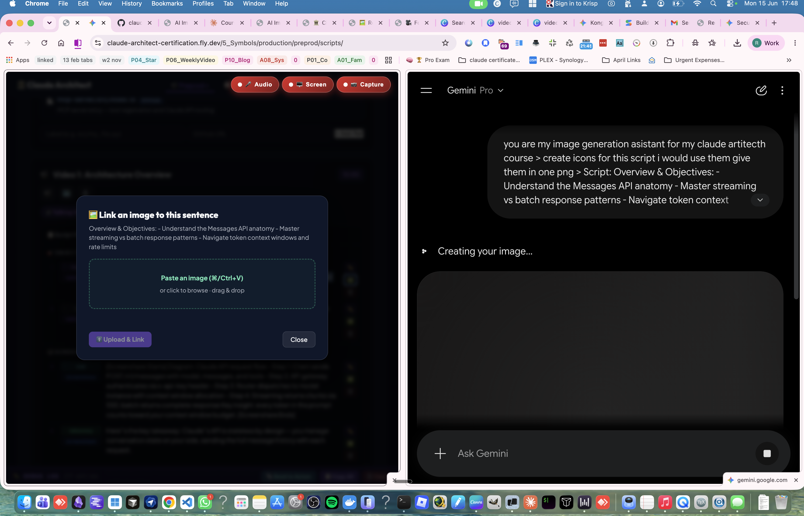

How we design and validate content simultaneously through real-time asset generation and active reading.
During initial script table reads, we don't just review text — we actively visualize the final video. By generating context-specific images side-by-side with the narration text, we immediately understand if the script works visually and structurally.
Perform verbal run-throughs of the script to check natural timing, vocal pacing, and flow.
Generate high-fidelity research images and visual assets on the right-hand panel using AI models.
Immediately map and paste those generated images into the script cues on the left-hand panel, tying them to exact sentences.
